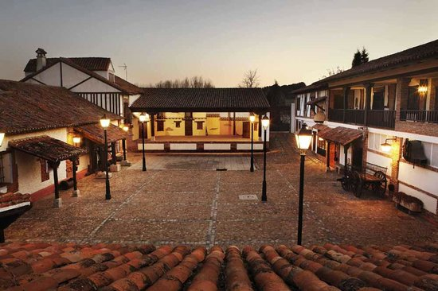
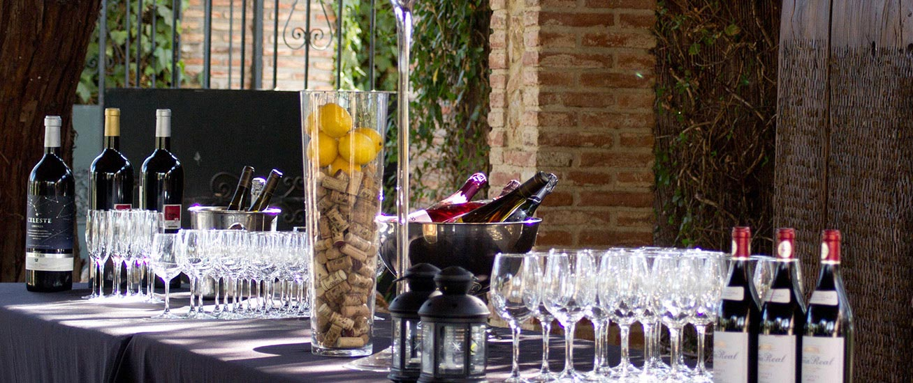
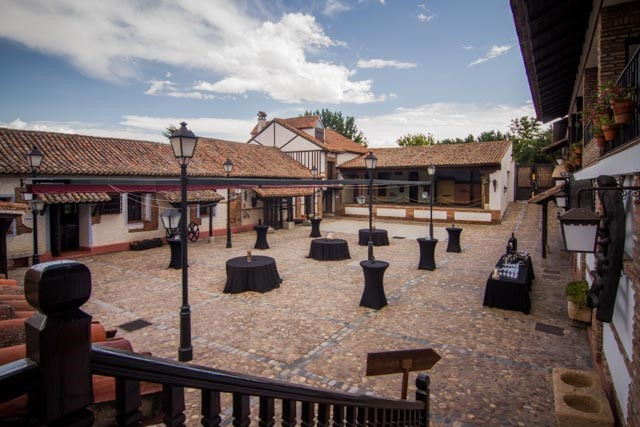
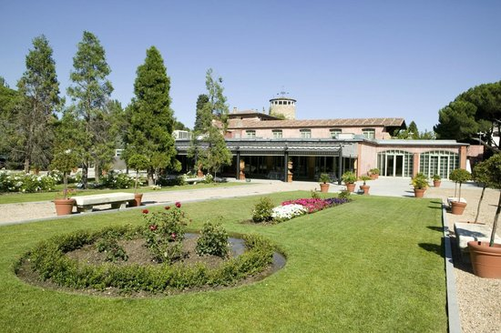

La Posta Real
La Posta Real is the perfect venue for any corporate meeting or gala dinners. It combines the two rooms it has. As told, one for the welcome drink and the other for the dinner, which are Herradura room (Indoor) and Corrala (Outdoor).
As told, we will divide the event in two parts; the welcome drink and the dinner + party.
Initially the event would be setted on the following set up; welcome drink outdoor and dinner and party indoor.

Welcome drink ( 30’ aprox)
The welcome drink would take place at Patio Corrala, and a music band would be playing during while. This will take about 1 hour, so guests will enjoy of a glass of cava (or whatever their prefer) while they listen a music band playing.


The dinner and party
The dinner and the party (later at night, after the dinner) would take place in the Herradura room. All teh audiovisual stuff and sitting will be setted inside. If clients request to change the spot (welcome drink inside and dinner and party outside) we will set it as requested.

Including.
Space rental. Including set up montage, cleaning service and security service: 500€ VAT incl.
Welcome drink. Rates from: 8,5€ VAT incl.
Dinner menu (special Gala dinner) apperitive,3 main courses and drinks included (1/3 wine per person, cava and water and coffee and tea). Rates from: 105€ VAT incl.
Open bar durinrg 3 hours of disco and dance: 40€ per person
DJ during 3 hours: 1500€ VAT incl.
Russian speaking assistance (optional): 650€ VAT incl.
Entertainment: band ladies (1h30’ concert): 3000€ VAT incl.
Entertainment: cover band (1 hour show): 2600€ VAT incl.
Stage (3x2 meters): 350€ VAT incl.
Red Carpet (aproximately): 350€ VAT incl.
Sound system during the entertainment ( speakers, PS Amp, 1 mixer and 2 wireless micros) and the dinner: 500€ VAT incl.
Light’s system during the band music and dinner: 350€ VAT incl.
Sound system and light system during 3 hours of DJ: 1800 VAT incl.
Technician: 600€ VAT incl.
Photographer from 20:00 to 02:00. Photo + editing: 970€ VAT incl.
Bus at disposal for the dinner during 6 hours: 800€ VAT incl.
La Masia de Jose Luis
Fully refurbished and inaugurated in the year 2003, the elegance of La Masia is present in each and every one of its corners. All thanks to the prestigious interior designer Pascua Ortega, who has designed each of the lounges. Elegant and comfortable spaces for any celebration that needs personality, quality and social brilliance.
The event will be celebrated at the Viewpoint room, located on the top floor of the farmhouse and has a capacity for 120 people seated. The main feature of the Viewpoint Room, in addition to its subtlety, is that it communicates with the Fireplace Lounge (where an after-dinner “discotheque” could be set up) thus giving guests the possibility to choose between one ambiance and the other.
In addition, La Masía has a cosy Mediterranean-style restaurant that offers a delicious menu of modernised-traditional cuisine, with succulent dishes for you to enjoy in a friendly and relaxed atmosphere.


Including.
Gala dinner menu: Including aperitive, 3 main courses and drink package. Space rental included in the menu rate. Rates from: 82,5€ per person.
Open bar during DJ. Rate per hour per person: 15€ VAT incl.
Bus at disposal for the dinner during 6 hours: 800€ VAT incl.
Hotel Meliá Palacio de los Duques
Like in Barcelona, we suggest you the third option for the gala dinner in the hotel. Guests would have aprivate space for the dinner and party, but as there will be more guests in the hotel the party should finish early, by midnight as maximum.

Including.
Gala dinner menu: Including aperitive, 3 main courses and drink package (wine, water, soft drinks, cava and coffee). Rates from: 125€ per person.
Space rental next to the garden: 750€ VAT incl.